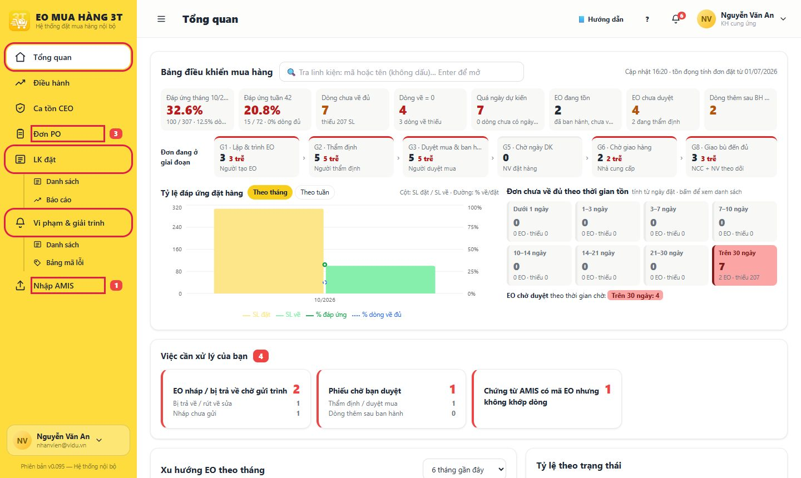

Hướng dẫn sử dụng app EO Mua hàng
Bản v0.086 · cập nhật 18/11/2026 · ảnh minh hoạ dùng dữ liệu mẫu (không phải đơn thật). Bấm vào ảnh để phóng to, Esc để đóng.
App mua hàng để làm gì?
Mọi linh kiện bị thiếu, dự kiến thiếu hoặc phát sinh phải được đặt đúng, về đủ, đúng hẹn — và khi chưa về thì luôn có người chịu trách nhiệm đang thúc. App ghi lại toàn bộ: ai lập đơn, ai duyệt, đã gửi nhà cung cấp (NCC) chưa, NCC hẹn ngày nào, đã thúc bao nhiêu lần, vì sao còn tồn, ai đang làm chậm.
| Câu hỏi quản lý | Xem ở đâu |
|---|---|
| Đơn đang tồn ở giai đoạn nào, bao lâu? | Điều hành (luồng giai đoạn) · Đơn PO (cột Tiến trình, Tồn) |
| Ai đang giữ phần tồn? | Điều hành › Theo người |
| Người đó đã làm gì, có quyết liệt không? | Điều hành › Điểm nóng (cột Thúc NCC, Hoạt động cuối) · Đơn PO (cột Thúc NCC, Hoạt động cuối) |
| Vì sao vẫn tồn? | Cột "NCC phản hồi gần nhất", "Giải trình gần nhất" · Điều hành › Nguyên nhân |
| Tốt lên hay xấu đi? | Điều hành › Nguyên nhân & xu hướng |
Chọn hướng dẫn theo vai trò của bạn
🛒 Người đặt hàngKH cung ứng · NV đặt hàng. Tạo PO, nhập ngày dự kiến, push / thúc NCC, giải trình lỗi.
✅ Người duyệtNgười thẩm định · người duyệt mua. Duyệt PO, duyệt dòng thêm sau ban hành.
📊 Lãnh đạo / quản lýTheo dõi tiến độ. Xác định tồn trong 5 giây, ai cần nhắc, nhắc giải trình.
📦 KhoTheo dõi hàng về kho mình, cập nhật ngày dự kiến, giải trình.
🧾 Kế toánNhập phiếu nhập kho AMIS, sửa / hủy chứng từ, xử lý chứng từ chưa khớp.
⚙️ AdminNgười dùng, phân quyền, danh mục, cấu hình.
Vào đâu để…? (tra nhanh)
| Việc | Vào đâu | Chi tiết |
|---|---|---|
| Tạo đơn mua (PO / EO) | Đơn PO › ＋ Tạo EO | Người đặt hàng › Tạo PO |
| Duyệt PO | Đơn PO › nhóm Chờ tôi duyệt › nút Đồng ý trên dòng | Người duyệt |
| Theo dõi 1 PO | Đơn PO › bấm dòng → popup PO (luồng 8 giai đoạn, linh kiện, kế hoạch, mail, nhật ký) | Theo dõi PO |
| Tìm kiếm linh kiện / PO | Tổng quan › ô 🔍 Tra linh kiện · ô tìm ở Đơn PO / LK đặt · phễu lọc trên tiêu đề cột | Tìm kiếm |
| Nhập ngày dự kiến hàng về | LK đặt › biểu tượng 📅 ở cột Thao tác · hoặc popup đơn hàng › Ngày NM / dự kiến / hàng về | Ngày dự kiến |
| Push NCC (gửi đề nghị xác nhận ngày giao) | LK đặt › tick dòng › Push (n) · hoặc popup PO › Push đối tác | Push NCC |
| Ghi nhận gọi điện / Zalo với NCC | LK đặt › tick dòng › 📞 Đã nhắc đối tác | Nhắc không qua mail |
| Giải trình lỗi | LK đặt › tick dòng › Giải trình chung · Vi phạm & giải trình · popup đơn hàng › Giải trình | Giải trình |
| Xác định vấn đề tồn | Điều hành (Kết luận nhanh, ô ĐỎ, Điểm nóng) · Đơn PO nhóm PO có dòng ĐỎ | Lãnh đạo / quản lý |
| Nhắc nhân viên giải trình | Điều hành › Theo người › 🔔 Nhắc | Nhắc nhở |
| Bảng mã lỗi từng bước của 1 đơn hàng / PO + giải trình | Bấm dòng → popup → tab Mã lỗi & giải trình | Mã lỗi trong đơn |
| Luồng trao đổi với NCC (đã thúc, NCC trả lời, ngày hẹn) | Popup đơn hàng → tab Trao đổi NCC | Trao đổi NCC |
| Tổng hợp lỗi – giải trình theo mã lỗi | Vi phạm & giải trình → Theo mã lỗi → Xem chi tiết | Theo mã lỗi |
| Ca tồn CEO | Menu Ca tồn CEO | Ca tồn CEO |
| Lưu bộ lọc của riêng tôi | Đơn PO › ★ Đã lưu › Lưu bộ lọc hiện tại (☆ = mặc định khi mở) | Bộ lọc đã lưu |
| Nhập phiếu nhập kho AMIS | Nhập AMIS › Nhập | Kế toán |
Bảng mã lỗi ER.MH
Bảng đầy đủ kèm số lượng đang đếm: menu Vi phạm & giải trình › Bảng mã lỗi.
Tự giải trình: lỗi R1 / R3 / R4 không cần giải trình nữa — hệ thống tự ghi "Auto giải trình vi phạm do …" — khi đã khắc phục sau đó
(R3: sau đó có mail CC hộp theo dõi / push / gọi-Zalo với NCC · R1: đã có ngày dự kiến · R4: đã nhập ngày dự kiến mới · hoặc đã có giải trình cùng lỗi) hoặc
quá 7 ngày không giải trình (vẫn ghi nhận là vi phạm của bạn). Muốn lỗi được ghi "đã giải trình" thật thì giải trình trong 7 ngày.
Mọi lỗi / cảnh báo trên app có 1 mã. Xem trong từng đơn hàng / PO ở tab Mã lỗi & giải trình, tổng hợp ở Vi phạm & giải trình › Theo mã lỗi.
| Mã | Bước | Lỗi | Phải giải trình? |
|---|---|---|---|
| ER.MH-001 | G5 | Không có ngày dự kiến trong 24h (Karofi / Livotec / Korihome) | Có (kèm ảnh) |
| ER.MH-002 | G5 | Không có ngày dự kiến trong 48h (đối tác khác) | Có (kèm ảnh) |
| ER.MH-003 | G4 | Không thúc / push đối tác thứ 2 / thứ 4 | Có |
| ER.MH-004 | G6 | Quá ngày dự kiến không cập nhật ngày mới | Có (kèm ảnh) |
| ER.MH-101…199 | theo lỗi | Lỗi ghi khi giải trình: 101 NCC không phản hồi · 102 NCC báo trễ · 103 NCC hết hàng (G6) · 104 Đặt sai mã / SL (G1) · 105 Chậm duyệt (G3) · 199 Khác | Đã kèm giải trình |
| ER.MH-201 / 202 / 203 | G6 / — | Cấp CEO: lùi ngày DK ≥ 3 lần / ngày DK cách ngày đặt ≥ 30 ngày / ≥ 3 lỗi | Không (cảnh báo) — xem menu Ca tồn CEO |
| ER.MH-301…308 | G1…G8 | Trễ hạn từng bước (chỉ đo, chưa phải giải trình) | Không |
Quy tắc cảnh báo (ai cũng cần biết)
| Mã | Quy tắc | Cách tránh lỗi |
|---|---|---|
| R1 | Sau khi PO ban hành phải có ngày dự kiến trong 24 giờ làm việc (Karofi / Livotec / Korihome) hoặc 48 giờ (hãng khác). Chủ nhật không tính. | Nhập ngày dự kiến ngay khi NCC hẹn. |
| R3 | Thứ 2 và thứ 4: dòng chưa có ngày dự kiến phải được thúc NCC trong kỳ. | Push, hoặc gửi mail NCC CC theodoimuahang@gmail.com, ghi mã 3TDO / mã linh kiện, hoặc ghi nhận 📞 gọi/Zalo. |
| R4 | Quá ngày dự kiến mà chưa về đủ → trong 24 giờ làm việc phải nhập ngày dự kiến mới. | Hỏi lại NCC, cập nhật ngày mới. |
| Cấp CEO | Lùi ngày dự kiến ≥ 3 lần · ngày dự kiến cách ngày đặt ≥ 30 ngày · ≥ 3 lỗi. | Báo quản lý sớm, giải trình rõ nguyên nhân. |
Mức cảnh báo trên màn Điều hành / Đơn PO:
- ĐỎ — cấp CEO · quá ngày dự kiến · trễ hạn chưa có ngày dự kiến · lỗi chờ giải trình ≥ 7 ngày · im lặng ≥ 7 ngày (không ai cập nhật, push, mail, gọi, giải trình).
- VÀNG — đang chờ ngày dự kiến · có lỗi chờ giải trình · im lặng ≥ 3 ngày · ngày dự kiến trong 2 ngày tới · tồn > 30 ngày.
- XANH — có ngày dự kiến, không lỗi chờ, có người tác động gần đây.
Màn hình chung

- Đơn PO: mỗi dòng = 1 PO (1 phiếu EO, mã phê duyệt 3TDO-…).
- LK đặt: mỗi dòng = 1 linh kiện trong 1 PO — nơi làm việc hằng ngày của người đặt hàng.
- Bấm vào 1 dòng → popup 95% màn hình (PO / đơn hàng / mã linh kiện), Esc để đóng.
- Mọi bảng kiểu Excel: bấm tiêu đề cột để sắp xếp, bấm phễu để lọc.
- Nút ? trên cùng: giải thích thuật ngữ số lượng.